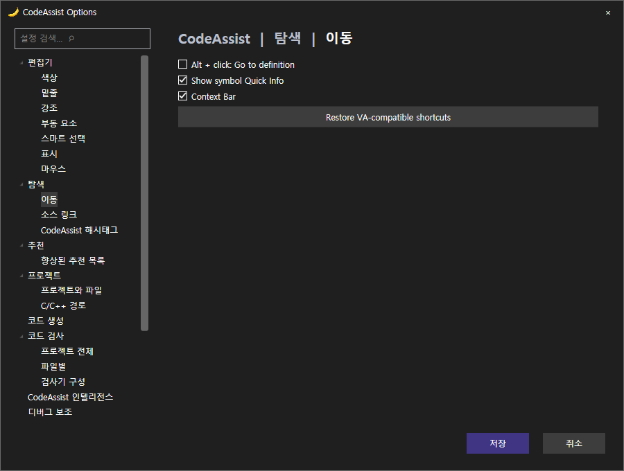
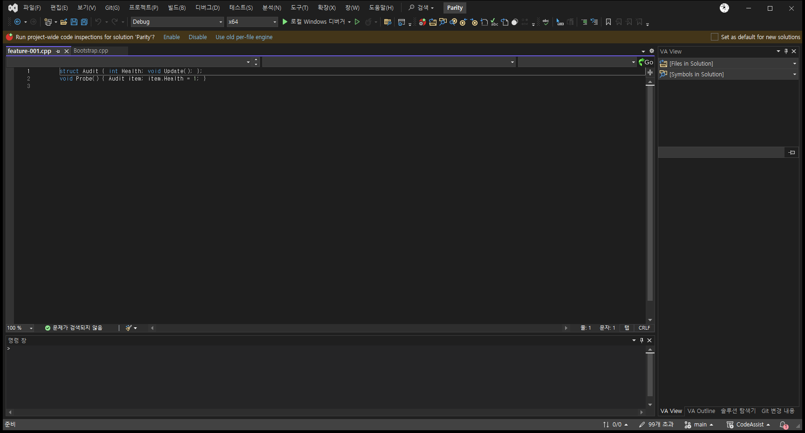
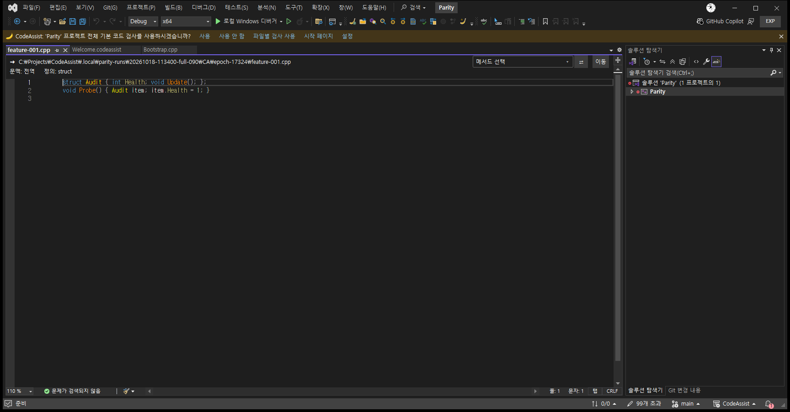
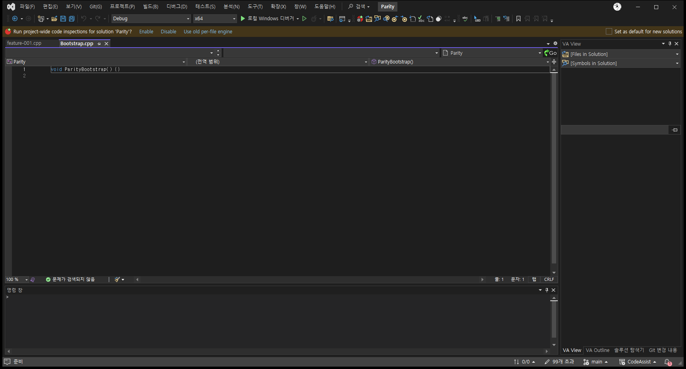
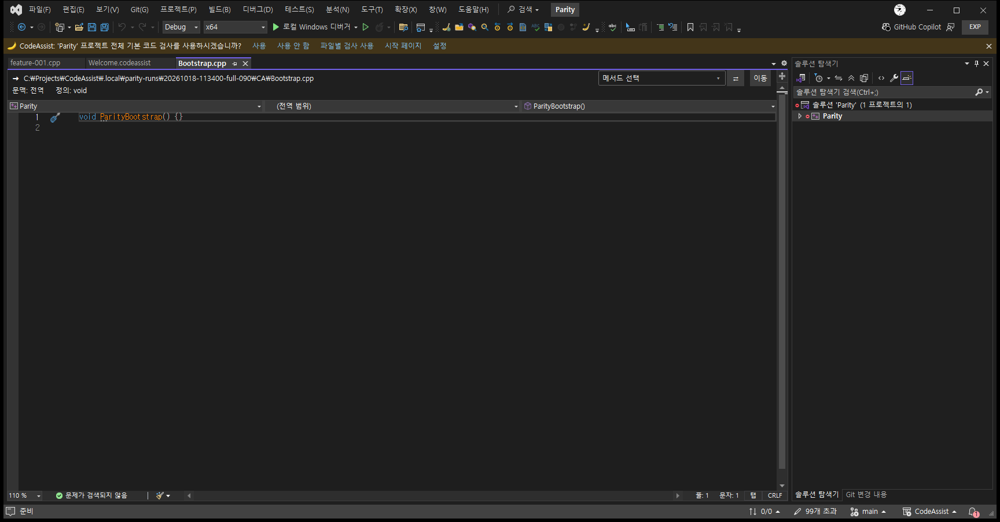

원문에 기록된 작업 내용과 당시 검증 범위를 정리한 보관 기록입니다.
보관 기록 · 결과와 검증 범위는 원문 작성 시점을 기준으로 읽어주세요.
feature-001 · Goto
동일 페이지 픽셀 비교 (동작 일치 판정 아님) · 76.59%
VA 근거: 20261018-021854-OptionsVerified / feature-001 · CA: 20261018-113400-full-090 / PID 17324
dialog
VA · dialog
[](../assets/imports/docs/validation/ui-comparison-0.0.90-20261018/20261018-021854-OptionsVerified-VA-feature-001-dialog.png) 참고 화면](../assets/imports/docs/validation/ui-comparison-0.0.90-20261018/20261018-021854-OptionsVerified-VA-feature-001-dialog.png)
참고 화면](../assets/imports/docs/validation/ui-comparison-0.0.90-20261018/20261018-021854-OptionsVerified-VA-feature-001-dialog.png)
CA · dialog
[
참고 화면](../assets/imports/docs/validation/ui-comparison-0.0.90-20261018/20261018-113400-full-090-CA-feature-001-dialog.png)
before
VA · before
[
참고 화면](../assets/imports/docs/validation/ui-comparison-0.0.90-20261018/20261018-015759-745-VA-feature-001-before.png)
CA · before
[
참고 화면](../assets/imports/docs/validation/ui-comparison-0.0.90-20261018/20261018-113400-full-090-CA-feature-001-before.png)
after
VA · after
[
참고 화면](../assets/imports/docs/validation/ui-comparison-0.0.90-20261018/20261018-015759-745-VA-feature-001-after.png)
CA · after
[
참고 화면](../assets/imports/docs/validation/ui-comparison-0.0.90-20261018/20261018-113400-full-090-CA-feature-001-after.png)
원문과 편집 이력
보존된 원문 열기
- 원문 SHA-256:
6e6653b8284ec4491cad1f97ef4e9164e87900e859c23695086329ba672b0c54
- 표시 날짜는 원본 파일의 수정 시각입니다. 작업 완료 시각은 원문에 있는 값을 기준으로 확인합니다.
 Tracefolio REPORTS & ISSUES
Tracefolio REPORTS & ISSUES